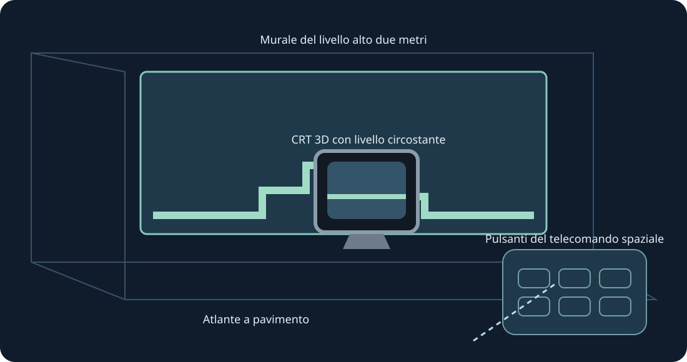

Pareti, pavimento, tavolo arcade, CRT e galleria curva. Anteprima XR sperimentale. Usa entrambe le prese per scalare.
Anteprima XR sperimentale. L’utente ha confermato la raccolta 0.4 visibile su Quest 3 dopo l’installazione; l’invio dei fotogrammi è stato registrato. La 0.5 viene compilata e verificata separatamente. Tracciamento, comfort, passthrough, posizione e gioco prolungato richiedono prove fisiche.
Per il test futuro, attiva la modalità sviluppatore e installa l’APK ARM64 pubblico con SideQuest o adb install -r. Apri Mario Compilation Ultra XR da Origini sconosciute, scegli una cartuccia o ZIP e premi Gioca. Importa All-Stars + World e Yoshi’s Island separatamente. L’APK pubblico non contiene ROM né progressi.
Seleziona livello, CRT nativo, telecomando o opzioni. Una presa sposta e ruota; due ridimensionano il livello anche con posizione bloccata. Sono disponibili regolazioni fini e metà/doppio/ripristina. Recupera riporta l’interfaccia vicino. Y apre le opzioni; la pagina Gioca contiene tutti i pulsanti SNES.
Pizzica e trascina lo stick; usa l’altra mano per i pulsanti. Il pizzico col medio afferra le maniglie. La perdita del tracciamento rilascia i comandi.
Una nuova installazione richiede 90 Hz e un murale AR trasparente alto due metri. Se necessario si usa una frequenza supportata; la simulazione resta originale. Scansione stanza e permessi scena/ancore sono facoltativi per le pareti automatiche. Restano posizione manuale e calibrazione del pavimento. Il runtime fornisce passthrough, senza permessi Internet, microfono o immagini della fotocamera.
Le immagini fantasma sono informative, senza simulare oggetti lontani. Le posizioni verificate appaiono subito; le immagini apprese provengono solo dal gioco locale.
Il tavolo arcade mostra l’area caricata. Fisica e attivazione degli oggetti restano originali.
Comandi rapidi PC: tieni premuto lo stick destro; croce sinistra/destra zoom, su 1:1, giù mappa intera, A blocca, B camera originale, X schermata, Y segue il giocatore. Rilascia per tornare ai comandi SNES. F1 o aiuto Y nel menu apre la spiegazione illustrata.
SNES: D-pad · A · B · X · Y · L · R · Start · Select
Touch: A → SNES B · B → SNES Y · X → SNES A · RT → SNES X · R3 → Start · LT → Rewind · Y → Sposta opzioni
Parity · Validation